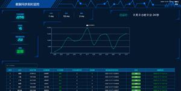
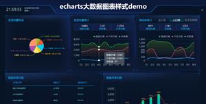
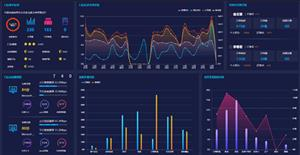

Bootstrap模板库
首页
模板
后台管理
企业网站
餐饮娱乐
创意作品集
手机移动端
非盈利组织
个人网站/博客
电子商务
即将上线/404
婚礼/婚纱摄影
医疗/健康
大数据
插件
加载和上传
提示和弹出层
图像和媒体
导航和菜单
背景和布局
时间
表单和按钮
选择和筛选
轮播和切换
评级和图表
CSS3动画
SVG动画
Canvas动画
JS小游戏
vuejs插件
手机端页面
其它
织梦模板
WordPress模板
矢量插画
当前最流行
共45个大数据模板
中文
热门

数据实时监控
数据统计图表
数据投屏页面
echarts统计
炫酷数据实时监控jquery+echarts统计分析
大数据
炫酷数据实时监控jquery+echarts统计分析，常见的大数据深蓝色风格，可以用作投屏。
物流大数据
echarts图表可视化
jquery数据分析
大屏幕页面
echarts物流大数据动态页面模板
大数据
echarts物流大数据动态页面模板，一共4种样式的图表统计分析页面，结合jquery实现的前端特效。
大数据可视化
大数据
农业大数据
农业大屏
农业监测大数据可视化
大数据
农业监测大数据可视化平台，可随时监测农作物的生长情况及外在因素的变化。
echarts大数据
数据分析图表
商品销售大数据
大数据分析
交易数据
可视化电商
销售大数据分析html模板
大数据
基于echarts.js实现的大数据分析页面，企业订单销售大数据分析H5图表页面，订单区域占比，商家订单，投诉排名，商品订单销售统计大数据页面模板下载。
大数据可视化
农业大数据
茶园大数据
指挥舱
驾驶舱
echarts
智慧农业
茶园监控大数据指挥舱HTML模板
大数据
茶园监控大数据指挥舱HTML模板，采用jquery+echart及面向对象编程思维，完成项目。

大数据图表
echarts统计
echarts图表
数据统计分析
echarts大数据图表样式demo
大数据
一款大数据页面demo，基于echarts插件实现的图表分析代码。
智慧政务
大数据网页
大数据分析
政务可视化
大屏页面
投屏大数据
贵州省智慧政务大数据网页模板
大数据
贵州省智慧政务大数据网页模板，用到了echarts和highcharts，这两款是当下最流行的js图表插件。共两个页面，挺漂亮的大数据分析HTML模板。
大数据统计
全国分布图
echarts大数据
echarts统计分析
数据可视化
大数据展示
程序员全国分布大数据统计页面
大数据
基于ECharts实现的大数据统计分析页面，蓝色科技感的程序员人数，技能，工程师年龄分布，地图公司人员流动图，各地区程序员占比大数据统计页面模板。
服务大数据
可视化面板
大数据可视化
信息公开大屏
大数据中心可视化平台网页模板
大数据
一款很酷的大数据中心可视化平台网页模板，基于echart.js图表插件实现的各种数据展现方式，适合各类数据可视化展示。如需商用，请联系qq:863512936
水质监测
监测预警平台
数据可视化
大数据投屏
echarts大数据
可视化数据
echarts水质监测数据可视化模板
大数据
一款基于echarts实现的数据图表统计分析页面，水质监测数据可视化web模板。
农业大数据
投屏页面
数据投屏
流动地图
echarts大屏幕
大屏可视化
数据处理页面
农业大数据投屏页面html模板
大数据
一款农业大数据投屏页面html模板，各种统计图表展示数据，中间一个地图流动特效。
可视化平台
大数据web
科技感后台
可视化投屏
echarts图表
统计网站
网页数据统计
统计数据分析
大数据可视化平台Web页面源码
大数据
一款蓝色的大数据可视化平台Web页面源码，科技感背景数据可视化后台管理页面，大数据统计后台首页，数据概览页面、后台管理、echarts、动态数字增长、css3循环滚动。
大数据
车联网
大数据可视化
运维监控
车联网大数据可视化页面模板
大数据
车联网大数据可视化页面模板，使用echarts图表插件实现的大数据页面。
大数据综治
综合治理
分析云图
大数据页面
大屏可视化
echarts大数据综合治理分析云图
大数据
一款基于echarts实现的大数据页面，综合治理分析云图html模板。因调用外部json数据，请在服务端查看效果，本地预览会有跨域问题。
可视化展板
数据分析页面
大数据
展板web
分析html
大数据可视化展板web页面模板
大数据
大数据可视化展板web页面模板，炫酷的数据统计分析图表网页源码。
大屏幕系统
数据投屏
突发预警平台
天气预警
大数据
突发事件预警平台大数据投屏系统模板
大数据
突发事件预警平台大数据投屏系统模板，可以当做天气情况预警系统页面，适合投放在大屏幕上。
消防预警系统
监测预警大数据
燃气报警
消防监控
大屏业务
可视化大屏
消防预警监测系统大数据分析页面
大数据
消防预警监测系统大数据分析页面，html+js+css文件，基于echarts统计图表实现的数据分析。可以投放在大屏幕上，类似于大数据分析页面。

门店效能
大数据分析
bootstrap大数据
echarts统计
可视化数据
门店效能大数据分析页面
大数据
bootstrap实现的门店效能大数据分析页面，基于echarts插件实现的统计图表效果。
1
2
3
标签查找
|
关于我们
|
用户协议
|
格式化工具
|
bootstrapmb.com 版权所有
苏ICP备17077179号-2
背景样式编辑器
|
按钮样式编辑器
|
背景动效编辑器
|
图片布局编辑器